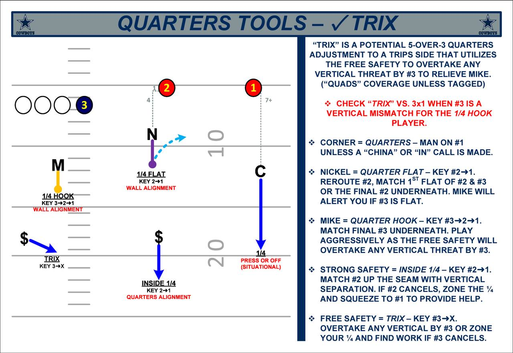
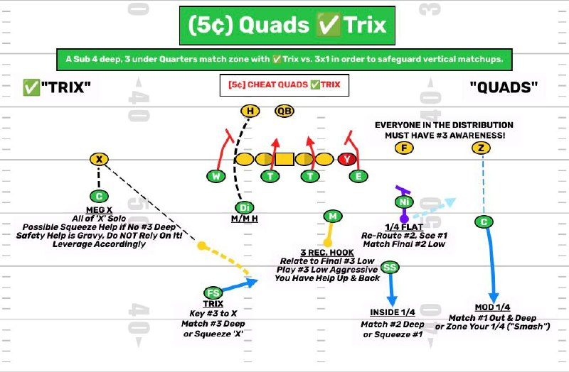

Trix is the quarters answer when #3 is a vertical problem for the Mike. The defense pushes the free safety over the top, keeps five over three to trips, and makes the QB prove the throw.
Trix is a 5 over 3 quarters adjustment to trips. The free safety works to the trips side so the defense can overtake vertical #3 instead of leaving the Mike trapped on a bad matchup.

Start with the structure. Five over three to trips, corner locked on #1, nickel and Mike sorting inside, free safety ready to overtake #3 vertical.
Open full imageStart with the trips side safety. If he is sitting over #2, the defense is telling you he can handle the seam and support the trips distribution. Then find the free safety. Pre snap or post snap, his eyes have to show you #3. If he is staring at #3, Trix is alive.
The install language says Trix checks when #3 is a vertical mismatch for the quarter hook player. Here is the QB translation.
| Defender | Key | Rule | QB alert |
|---|---|---|---|
| Corner | #1 | Quarters, man on #1 unless a China or in call is made. | #1 is a matchup throw. Do not expect the corner to trap #2. |
| Nickel | #2 to #1 | Quarter flat. Reroute #2. Match first flat of #2 or #3, or the final #2 underneath. | If the nickel widens or latches, look inside behind him. |
| Mike | #3 to #2 to #1 | Quarter hook. Match final #3 underneath. Play aggressive because the free safety overtakes vertical #3. | If Mike triggers low, replace him. If he walls, work away from the crowd. |
| Strong safety | #2 to #1 | Inside quarter. Match #2 up the seam with vertical separation. If #2 cancels, zone the quarter and squeeze to #1. | #2 seam is not cheap. Confirm if the safety carries it. |
| Free safety | #3 to X | Trix player. Overtake vertical #3. If #3 cancels, zone the quarter and find work. | His movement tells you whether #3 is capped and where the backside space opens. |
Read Trix by asking one question first, who is taking vertical #3? If the free safety is over the top, the defense solved the seam. The pre snap clues are simple. Trips side safety over #2, then the free safety with eyes on #3 either before or right after the snap.
Use the panels like a study room. Tap the sheet, zoom in, then talk through the safety movement and the QB answer.
Tap the picture to zoom. Swipe or use the arrows to change panels.
Trix is designed to steal the easy seam. The answer is not panic. It is seeing where the defense spent the extra body.
The free safety is the Trix player. If #3 pushes vertical, expect him to overtake it. Throw #3 only if the route wins clearly or the safety is late.
The corner is quarters man on #1 unless the defense makes a special call. If #1 has leverage, timing, or a matchup, that throw stays alive.
The Mike knows he has help up and back. If he jumps the low route, replace him. Do not throw late into his wall.
If the free safety cheats to trips, the backside safety and corner have to handle more space. That can create your best answer away from the rotation.
Use these as the visual reference for the alignment, reads, and distribution rules.
Five over three quarters adjustment. Free safety works to vertical #3, Mike plays quarter hook, nickel plays quarter flat.
Open full image
Quads view of the same answer. Everyone in the distribution must have #3 awareness.
Open full imageMake sure the QB sees the check, the safety movement, and the throw answer.